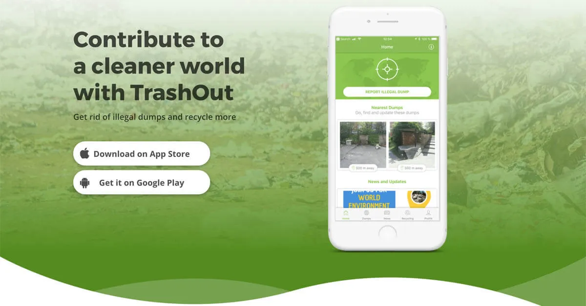
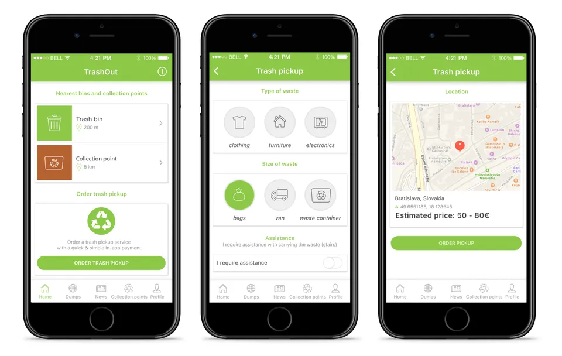

TrashOut is a mobile application dedicated to addressing environmental concerns related to waste management. It enables users to report instances of illegal dumping, littering, and other waste-related issues they encounter in their communities. By providing a user-friendly platform for reporting and documenting environmental problems, TrashOut engages citizens in environmental stewardship and empowers them to take action to improve their surroundings. The app also facilitates data collection and analysis, offering valuable insights into the extent and location of waste issues to inform decision-making and advocacy efforts. With its focus on community engagement and environmental awareness, TrashOut serves as a valuable tool for promoting responsible waste disposal practices and fostering a cleaner, healthier environment.
.png)
It give users the features such as:
1.Waste Reporting: TrashOut empowers users to report instances of illegal dumping, littering, and waste-related issues in their communities through a user-friendly mobile interface.
2.Environmental Monitoring: The app facilitates real-time monitoring of environmental concerns, allowing users to document and report instances of pollution, waste accumulation, and habitat degradation.
3.Community Engagement: TrashOut fosters community engagement by encouraging users to take an active role in environmental stewardship and collaborate with local authorities to address waste management challenges.
4.Data Collection: By collecting and aggregating user-reported data, TrashOut generates valuable insights into the extent and location of environmental issues, informing policy decisions and resource allocation.
5.Awareness Building: Through its reporting features and interactive maps, TrashOut raises awareness about the environmental impact of waste and promotes responsible waste disposal practices among individuals and communities.
6.Advocacy and Action: TrashOut serves as a catalyst for advocacy and action, empowering users to advocate for improved waste management policies, participate in cleanup initiatives, and work towards a cleaner, healthier environment.
 